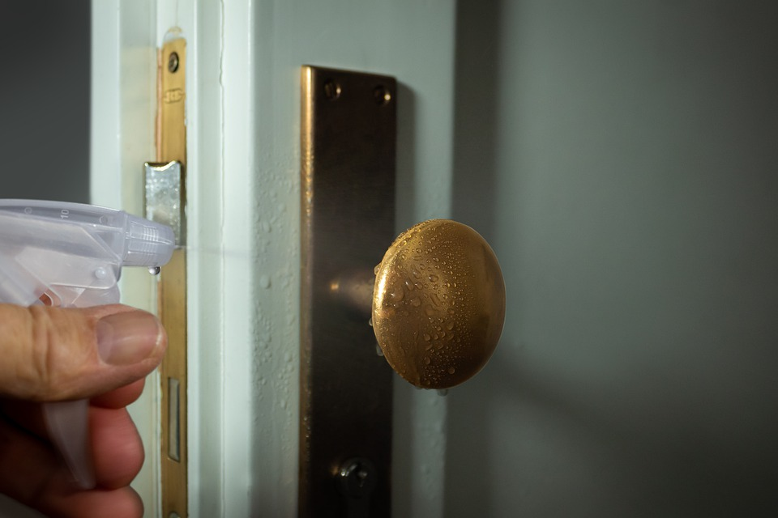
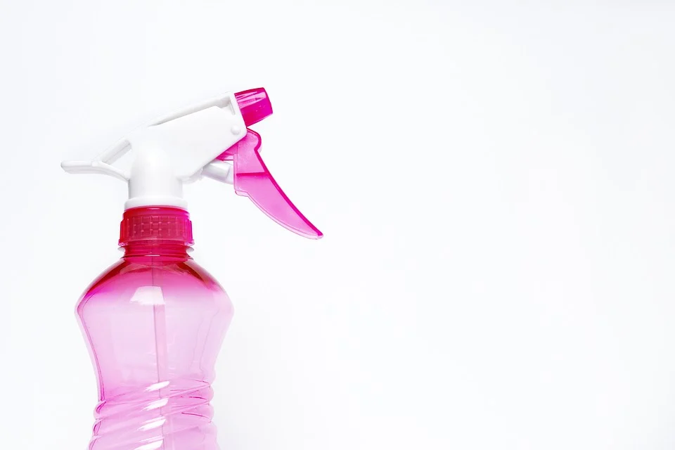
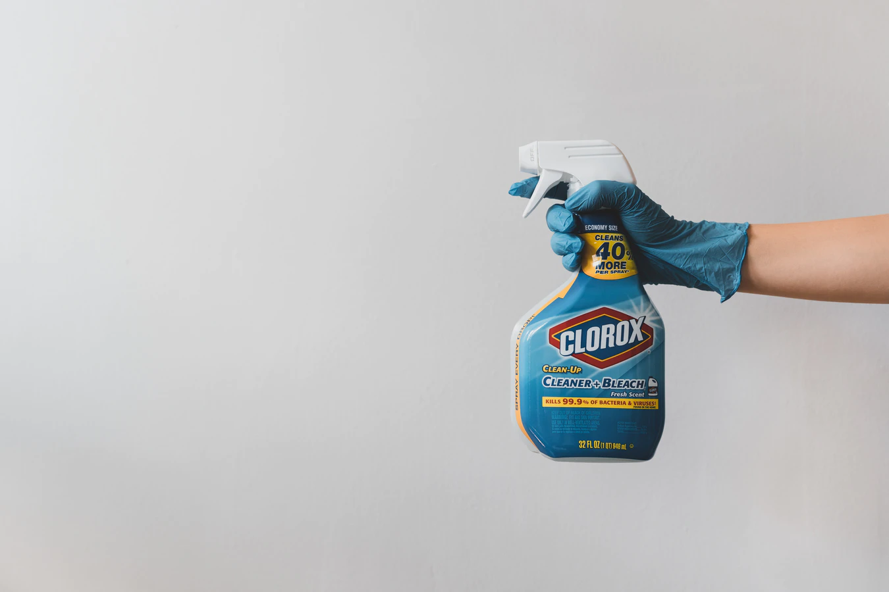
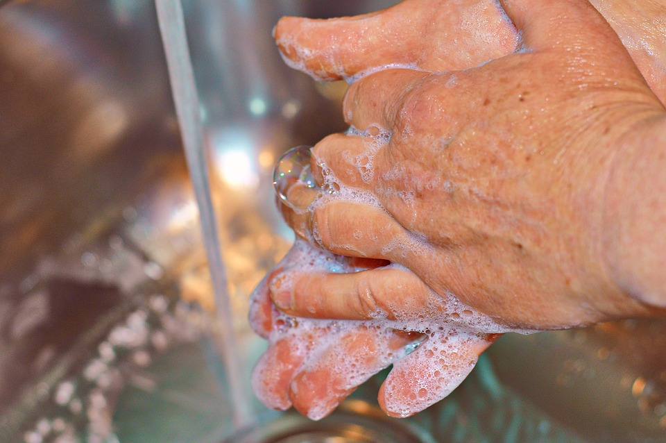

Coronavirus: how to clean your home effectively
by Anna Studman
Posted on March 21, 2020 at 12:00 PM

With many of us now spending more time at home, it’s important to keep up good home hygiene habits to stay healthy, especially if someone in your household is self-isolating.
Get our tips on what to focus on when cleaning, what cleaning products are effective, and why you don’t need to splurge on specialist antibacterial products.
What do you need to clean?
Focus on the high traffic areas that enable pathogens to spread around the home. These include your hands, and frequent touch areas such as:
- Door handles and light switches
- Appliance handles and dials – e.g. kettle handle, fridge door, oven and microwave dials
- TV remotes
- Shared computer equipment such as keyboards
- Toilet and tap handles
- Food prep areas and bathroom surfaces
You also need to think about things that can spread germs, such as sponges and cleaning cloths.
Professor Sally Bloomfield, from the London School of Hygiene and Tropical Medicine, notes that, rather than cleaning the house, the goal is: ‘to prevent the person-to-person spread of infection, which requires good respiratory and hand hygiene [washing hands and covering your mouth and nose if you sneeze or cough] and good hygiene of contact surfaces.’
Which cleaning products work against coronavirus?
As with cleaning your hands, good old soap and water are actually some of the most effective options for cleaning surfaces.
Dr Primrose Freestone, Associate Professor in Clinical Microbiology at the University of Leicester explains:
‘COVID-19 is an enveloped RNA (ribonucleic acid) virus, meaning that proteins and lipids are part of its structure.
Therefore, detergents by themselves – such as soap and even washing-up liquid – work very well at disrupting the virus structure by dissolving the lipids, which in turn inactivates the virus by stopping it binding to our cells.’
The alcohol in hand sanitiser works in a similar way, by dissolving lipids in the virus coating (as long as it’s 60% alcohol).
Cleaning surfaces to prevent infection
Current evidence suggests that COVID-19 (the novel coronavirus) may survive on surfaces for hours or days – research is still ongoing.
Studies have found that similar coronaviruses like SARS and MERS can persist on hand surfaces like metal, glass or plastic for days. But they can be killed within one minute if cleaned and disinfected.
You should first clean hard surfaces with warm, soapy water and then disinfect them.
Which disinfectant products to use
For disinfection, diluted household bleach solutions (hydrogen peroxide or sodium hypochlorite), alcohol solutions with at least 70% alcohol, and certain anti-viral household disinfectants should be effective.
You don’t need to spend extra money on specialised disinfectant products, though. Dr Freestone says that regular detergent and diluted bleach are fine for combating COVID-19.
If you are buying disinfectant, check the product information to make sure it says it combats viruses including influenza and human coronaviruses – an example is Dettol surface cleanser.
Check the usage instructions for best results
It’s also important to follow the instructions carefully. Some products may require you to leave the product on for a set amount of time for it to work properly.
Ventilating the room while you clean is also a good idea. You should also never mix different cleaning products together as they could create harmful fumes.
Do antibacterial products work against COVID-19?
Many products marketed as antibacterial won’t work against a virus like COVID-19. They need to contain at least 70% alcohol to have any impact on viruses, as opposed to bacteria like E.coli or salmonella.
As above, if you’re buying specific disinfectant products like spray or wipes, check first if they say they work against viruses as well as bacteria.
A lot of these products are in high demand right now and might be out of stock, so it’s not worth stressing yourself out trying to hunt them down, as soapy water and bleach or alcohol-based cleaners will also work.
What about cleaning clothes and laundry?

To kill germs you need to use a bleach or other disinfectant-based laundry detergent containing active oxygen bleach.
Liquid detergents don’t contain bleach, so you’ll need to choose a laundry powder that contains a bleaching agent. Biological powders tend to have more bleaching agents than non-biological powders.
Wash reusable cloths and tea towels at 60 degrees or more between uses, and change frequently. You can also put washing up sponges on a hot cycle in the dishwasher.
Do you need to disinfect groceries and packaging?
Dr Freestone told us ‘a recent laboratory study showed the virus could be detected in a viable and so infectious form for up 24hrs on cardboard, and 2-3 days on plastics.’ Though the WHO says that the likelihood of an infected person contaminating commercial goods is low.
Postal workers and couriers have been briefed on minimising contact during deliveries and taking precautions with handling packages, but to be on the safe side you should dispose of packaging and wash your hands afterwards.
The FSA says that it is very unlikely that people could catch COVID-19 from food, and it is not known to be transmitted by exposure to food or food packaging.
You should take care to wash your hands before preparing food, and rinse fruit and veg before eating it, as usual.
What to do if you are living with someone who has COVID-19 symptoms
You’ll need to exercise extra caution if you are living with someone who has symptoms of coronavirus. Especially as everyone in a household where someone has symptoms is required to self-isolate for 14 days.
Dr Freestone says it’s not excessive to disinfect food prep areas, and frequently used door handles (such as the living room, kitchen, and toilet), every few hours if someone in the house has the virus.
You also shouldn’t share any towels, including hand towels and tea towels.
Coughs and sneezes should be caught in tissues, which are then immediately discarded, and hands washed straight after.
You may be interested also in

What to do during the quarantine
Staying at home during quarantine is a must for one’s own health and the safety of the entire community
Read it
How to reduce the spread of coronavirus
This is the latest story in our Coronavirus Update series, in which Harvard specialists in epidemiology, infectious disease, economics, politics, and other disciplines offer insights into what the latest developments in the COVID-19 outbreak may bring.
Read it
Coronavirus pandemic: Tracking the global outbreak
Coronavirus is continuing its spread across the world, with more than three million confirmed cases in 185 countries. At least 200,000 people have died.
To the article →
Here's How to Safely Exercise Outside During the Coronavirus Pandemic
Use these tips to get fresh air and boost your immune system while social distancing.
To the article →